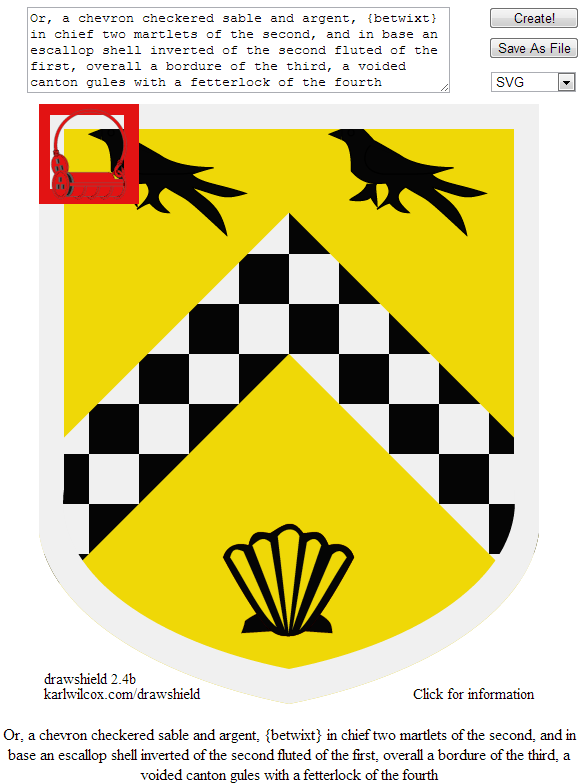

Posted to: The Google+ Heraldry Community
Posted by: Karl Wilcox
Created on: July 25 2013 at 22:52
Moderator's Update
Hello Folks, glad to see things have been happening in my absence. Apologies for not posting for so long but the darned day job keeps getting in the way! Due to a large number of students this year I seem to have been marking assignments more or less continuously since April.
All done now and back to the important stuff. I'm working on an update to Drawshield (work in progress below), as you can see, getting the layout right is always the hardest part.
I'm also working my way through a back-log of heraldry related news items, so expect to see some more postings here soon.
I hope those of you in the Northern hemisphere are enjoying the summer!
Best regards to all,
Karl
